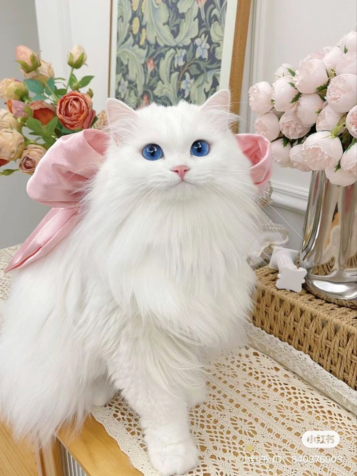

Imagenes
El blanco puro es el color de gato más raro Tener el pelaje de color es muy común en los gatos. Pero un pelaje sin color… ¡eso es menos frecuente! Y los expertos dicen que los gatos de pelaje blanco tienen que agradecer a un pequeño gen apodado W sus atributos únicos.

Imagenes
Todo sobre los gatos blancos: 10 maravillosos datos sobre los gatos blancos Gato > Razas No sustituye a consejo veterinario profesional. Hedwig, Casper, Duquesa o Brie; sea cual sea el nombre de tu gato de color marfil, seguro que llama tanto la atención como su pelaje blanco nacarado. Los gatos blancos pueden carecer de color en su pelaje, pero son cualquier cosa menos vainilla. Al igual que sus llamativos amigos calicó y carey, los gatos blancos puros y blancos con manchas tienen que agradecer a su genética su llamativo buen aspecto y su personalidad única. Sigue leyendo para conocer más datos curiosos sobre los gatos blancos. Advertisement El blanco puro es el color de gato más raro Tener el pelaje de color es muy común en los gatos. Pero un pelaje sin color… ¡eso es menos frecuente! Y los expertos dicen que los gatos de pelaje blanco tienen que agradecer a un pequeño gen apodado W sus atributos únicos. “El blanco es una interesante falta de pigmentación; no es un color”, dice Teresa Keiger, juez de todas las razas de la asociación Cat Fanciers’ Association (CFA). Existe un gen llamado KIT, y la forma W de KIT suprime la melanina, añade la Dra. Hannah Hart, doctora en medicina veterinaria y asesora veterinaria de Chewy. El gen W puede ser recesivo o dominante; la lotería de los genes y su combinación determinan si un gato es totalmente blanco o si tiene manchas de color. “Solo un 5 % de los gatos tienen el pelaje totalmente blanco”, dice la Dra. Hart. Según Keiger, los cachorros blancos con copias del gen recesivo W tendrán una mancha de color en la parte superior de la cabeza llamada “casquete”. “Ese es el color que tendría el gato si la melanina se activara para producir color”, explica. “Desaparece cuando mudan el pelaje de cachorro y adquieren el de adulto”.
Imagenes
Los gatos blancos pueden quemarse con el sol “Al igual que las personas, los gatos pueden quemarse con el sol”, dice la Dra. Hart. La melanina hace algo más que influir en el color del pelaje y de los ojos: protege la piel de los efectos nocivos de la luz ultravioleta (UV).
Todos los gatos pueden quemarse con el sol, pero los blancos, los que tienen manchas blancas y los de color claro son los que corren más riesgo. Además, las zonas con poco o nada de pelo, como la nariz, las puntas de las orejas, la boca, los labios, los ojos y los párpados del gato, son especialmente vulnerables al sol.
Imagenes
Los gatos blancos suelen ser sordos El gen W también provoca una reducción de las células productoras de melanina llamadas melanoblastos. Los melanoblastos migran al oído, donde desempeñan un papel fundamental en el mantenimiento y la regulación del equilibrio químico, explica Keiger. Sin melanoblastos, los desequilibrios químicos provocan la muerte de los pelitos del oído interno y la sordera de los gatos.
Imagenes con filtro
Gracias al gen W, que enmascara o reduce el desarrollo de melanina, los gatos blancos tienen ojos claros en tonos de azul, dorado, verde y cobre. Algunos tienen los ojos de dos colores diferentes, una afección especial llamada heterocromía.
Imagenes GIF
LLos gatos blancos se consideran amuletos de la buena suerte Si consideras que tu gato blanco es tu amuleto de la suerte, no eres el único que lo piensa. “En Rusia, algunas personas creen que tener un gato blanco en casa atrae la riqueza y la prosperidad“, afirma la Dra. Hart. En otras partes del mundo, es muy común esperar que un gato blanco se cruce en tu camino.